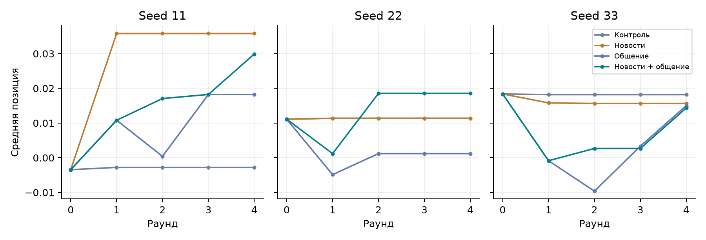
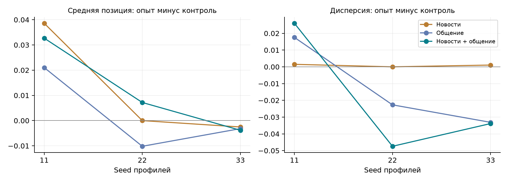
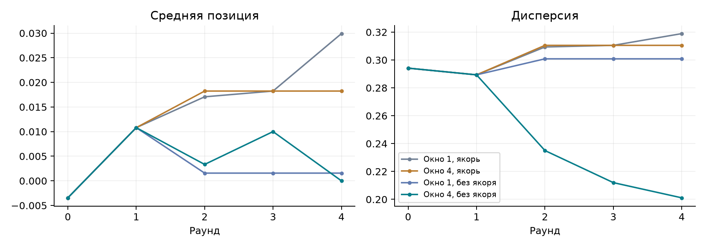
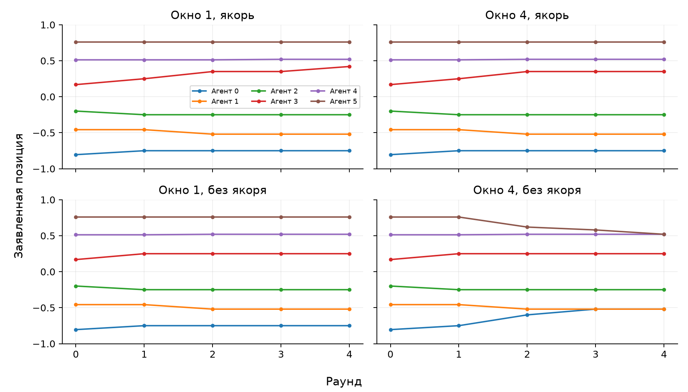

Устойчивость предпочтений: профили, память и исходная позиция
Третья содержательная серия с реальной LLM для первой идеи лабораторной. Concordia 2.4.0, bonsai2-27b, 23 ноября 2026 года. Проверяется переносимость первых наблюдений на другие численные профили, влияние окна памяти и постоянного напоминания исходной позиции.
| Показатель | Результат |
|---|
| Новые симуляции | 11; по 6 агентов и 4 раунда |
| Новые запросы / успешные ответы | 264 / 264 |
| Исторические базовые условия | 4 запуска seed=11 использованы повторно, без новых обращений к API |
| Основные условия | 4 условия × 3 набора профилей; 8 из 12 запусков новые |
| Память × исходное поле | 4 ячейки: окна 1/4 × поле есть/нет; seed=11 |
| Новые токены | 119345 |
| Время серии | 845.1 с |
| HTTP-ошибки | [] |
Первый пилот показал небольшое изменение позиций без смены исходных сторон. Проверка качества затем точно воспроизвела все четыре траектории, но выявила чувствительность к формулировке и дублирующему полю initial_opinion. Поэтому текущая серия меняет факторы по отдельности и заранее фиксирует сравнения, не подбирая промпт под желаемый результат.
Это исследование чувствительности минимального стенда. Три набора параметров не представляют население, а четыре раунда не моделируют долгосрочную эволюцию сообщества. Результаты относятся к одной модели, одному предметному примеру и сохранённым формулировкам.
1. План серии и сопоставимость условий
План сохранён до запросов в protocol.json. Для seed=22 и seed=33 выполнены control, news_only, peers_only и combined. Профили внутри каждого seed идентичны между условиями. Величина исходной позиции получает случайное отклонение до 0.05, доверие к источнику меняется в диапазоне [0.35,0.90]. Роли и их порядок фиксированы, исходно три агента отрицательны и три положительны.
Для seed=11 добавлены combined_memory4, combined_no_initial и combined_memory4_no_initial. Четвёртая ячейка, combined с окном 1 и полем исходной позиции, взята из первого пилота. Её полное повторение с теми же параметрами ранее дало одинаковые тексты и траектории, поэтому повторно расходовать 24 запроса на неё не стали.
| Фактор | Уровни и постоянные параметры |
|---|
| Источник | Один вымышленный опрос в пользу цифрового доступа, значение +0.8, только в раунде 1 |
| Общение | Кольцо, два соседа; текст и численная позиция предыдущего раунда |
| Память | В промпт извлекаются наблюдения последних 1 либо 4 раундов |
| Исходная позиция | Собственное поле initial_opinion оставлено либо удалено из контекста |
| Не менялись | Роли, текущая opinion, схема JSON, модель, temperature=0 и лимит ответа 300 токенов |
| Порядок | 11 новых запусков перемешаны фиксированным seed=2303 |
Новые профили означают изменения численных параметров, а не новые биографии или другую структуру сообщества. При удалении initial_opinion текущая позиция остаётся в промпте. Начальные позиции соседей могут сохраняться как старые внешние сообщения при длинном окне. Поэтому это не удаление всей информации об исходном состоянии общества.
Слово «якорь» в подписях таблиц означает только наличие поля initial_opinion. Оно не обозначает установленный психологический механизм. Аналогично «память» здесь - окно извлечения наблюдений, а не оценка способности модели помнить собственный жизненный опыт.
Одна модель вызывается последовательно, с общим ограничителем 20 RPM и предварительным токенным резервированием. Автоматические повторы отсутствуют. Каждый ответ валидируется; частичный журнал сохраняется после каждого действия. Статистические тесты значимости для этой небольшой серии не планировались.
2. Базовые условия на трёх наборах профилей
| Seed | Условие | Ср. позиция | Дисперсия | |Сдвиг| |
|---|
| 11 | Контроль | -0.0028 | 0.2929 | 0.0009 |
| 11 | Новости | 0.0358 | 0.2944 | 0.0395 |
| 11 | Общение | 0.0182 | 0.3105 | 0.0594 |
| 11 | Новости + общение | 0.0299 | 0.3189 | 0.0711 |
| 22 | Контроль | 0.0114 | 0.3289 | 0.0003 |
| 22 | Новости | 0.0114 | 0.3289 | 0.0003 |
| 22 | Общение | 0.0012 | 0.3062 | 0.0221 |
| 22 | Новости + общение | 0.0186 | 0.2815 | 0.0394 |
| 33 | Контроль | 0.0182 | 0.3072 | 0.0002 |
| 33 | Новости | 0.0157 | 0.3083 | 0.0027 |
| 33 | Общение | 0.0150 | 0.2741 | 0.0527 |
| 33 | Новости + общение | 0.0143 | 0.2733 | 0.0517 |

Итоги четвёртого раунда. Seed=11 - исторический пилот; 22 и 33 - новые запуски. Сдвиг считается относительно собственной исходной позиции каждого агента. Для вывода о влиянии условий далее используются парные разности с контролем того же seed, а не разности между несопоставимыми наборами профилей.
3. Насколько эффекты переносятся между профилями
| Условие | Δ среднего: среднее [min; max] | Δ дисперсии: среднее [min; max] |
|---|
| Новости | +0.0120 [-0.0025; +0.0386] | +0.0009 [+0.0000; +0.0015] |
| Общение | +0.0026 [-0.0102; +0.0210] | -0.0127 [-0.0331; +0.0176] |
| Новости + общение | +0.0120 [-0.0038; +0.0327] | -0.0184 [-0.0474; +0.0260] |

Δ означает итог опытного условия минус итог контроля с теми же профилями. Положительное Δ среднего означает относительный сдвиг к цифровому доступу. Положительное Δ дисперсии означает больший разброс заявленных позиций. Интервалы в таблице - минимум и максимум трёх наблюдений, не доверительные интервалы.
Новости: Δ среднего положительно в 1/3 наборах, отрицательно в 1/3; Δ дисперсии положительно в 2/3, отрицательно в 0/3.
Общение: Δ среднего положительно в 1/3 наборах, отрицательно в 2/3; Δ дисперсии положительно в 1/3, отрицательно в 2/3.
Новости + общение: Δ среднего положительно в 2/3 наборах, отрицательно в 1/3; Δ дисперсии положительно в 1/3, отрицательно в 2/3.
Знак, совпавший в трёх близких наборах профилей, является результатом этого скрининга. Он не устанавливает универсальный эффект и не отделяет влияние фиксированных ролей от других механизмов. Три seed нельзя считать тремя независимыми человеческими сообществами, а шесть взаимодействующих агентов - независимыми повторениями.
4. Память и напоминание исходной позиции
| Ячейка | Ср. позиция | Дисперсия | |Сдвиг| |
|---|
| Окно 1, якорь | 0.0299 | 0.3189 | 0.0711 |
| Окно 4, якорь | 0.0182 | 0.3105 | 0.0594 |
| Окно 1, без якоря | 0.0016 | 0.3008 | 0.0428 |
| Окно 4, без якоря | 0.0000 | 0.2011 | 0.1210 |

Все ячейки используют combined и профили seed=11. Окно меняет доступную внешнюю историю, а переключатель исходной позиции меняет только одно собственное поле. Текущая позиция всегда передаётся. Сравнение включает тексты, которые агенты сгенерировали в соответствующей ветви, поэтому различия могут накапливаться через взаимодействия.
Средний модуль сдвига при увеличении окна: с полем 0.0711 → 0.0594, без поля 0.0428 → 0.1210. Поэтому в этом прогоне эффект окна зависит от способа предъявления собственного состояния.
| Показатель | Память при якоре | Память без якоря | Убрать якорь, H1 | Убрать якорь, H4 | Взаимодействие |
|---|
| Средняя позиция | -0.0117 | -0.0016 | -0.0283 | -0.0182 | +0.0101 |
| Дисперсия | -0.0084 | -0.0997 | -0.0181 | -0.1094 | -0.0913 |
| |Сдвиг| | -0.0117 | +0.0782 | -0.0283 | +0.0616 | +0.0899 |
Эффект памяти: окно 4 минус окно 1 при фиксированном состоянии поля. Эффект удаления: без поля минус с полем при фиксированном окне. Взаимодействие: разность двух эффектов памяти. Это контрасты одного набора профилей, без оценки случайной ошибки и без переноса на людей.
5. Индивидуальные траектории и пределы памяти

На рисунке показаны все шесть агентов в четырёх ячейках. Усреднённый результат не заменяет индивидуальные траектории: одинаковое среднее может скрывать разнонаправленные изменения. Прямые смены исходной стороны и размер изменений сохранены в таблицах и исходных JSON.
| Агент | Исходно | H1, якорь | H4, якорь | H1, без поля | H4, без поля |
|---|
| 0 | -0.805 | -0.750 | -0.750 | -0.750 | -0.520 |
| 1 | -0.458 | -0.520 | -0.520 | -0.520 | -0.520 |
| 2 | -0.199 | -0.250 | -0.250 | -0.250 | -0.250 |
| 3 | 0.168 | 0.420 | 0.350 | 0.250 | 0.250 |
| 4 | 0.513 | 0.520 | 0.520 | 0.520 | 0.520 |
| 5 | 0.759 | 0.759 | 0.759 | 0.759 | 0.520 |
Относительно базовой ячейки изменились финальные позиции: Окно 4, якорь: агент 3 (teacher), Δ=-0.070; Окно 1, без якоря: агент 3 (teacher), Δ=-0.170; Окно 4, без якоря: агент 0 (student), Δ=+0.230, агент 3 (teacher), Δ=-0.170, агент 5 (developer), Δ=-0.239.
Длинное окно содержит старые новости и сообщения соседей. Собственная предыдущая аргументация в память автоматически не записывается; переносится собственная численная позиция. Поэтому опыт не доказывает эффект полноценной автобиографической памяти агента. Возврат старого текста соседей также может усиливать повторное присутствие одного аргумента, а не только полезное запоминание.
6. Контекст, задержки и стоимость проведения
| Ячейка | Наблюдений в последнем промпте | Символов в последнем промпте | Входных токенов за запуск |
|---|
| Окно 1, якорь | 2 | 1457 | 9464 |
| Окно 4, якорь | 9 | 3168 | 14738 |
| Окно 1, без якоря | 2 | 1518 | 9108 |
| Окно 4, без якоря | 9 | 3160 | 14531 |
В таблице среднее по шести последним вызовам; число входных токенов - сумма за все четыре раунда. Ячейка «окно 1, якорь» историческая: её токены приведены только для сравнения и не включены в расход новой серии. Окно памяти ограничивает извлечение событий, но не удаляет историю из ListMemory.
| Новая группа запусков | Запросы | Входные токены | Выходные токены |
|---|
| Новые профили, seed 22/33 | 192 | 61025 | 14586 |
| Память 4, seed 11 | 48 | 29269 | 3585 |
| Окно 1 без поля, seed 11 | 24 | 9108 | 1772 |
Новая серия: 264 запросов и 119345 токенов. Из них вход 99402, выход 19943. Общая длительность 845.1 с; медиана сетевого вызова 1.67 с, 95-й перцентиль 2.13 с. Суммарное ожидание ограничителя 392.7 с.
Наблюдаемая длительность включает ожидание разрешённой частоты, обработку ответа и сохранение checkpoint. При длинном контексте консервативное резервирование токенов может дополнительно ограничивать частоту. Фактический расход взят из usage; резерв и реальные токены не складываются. Денежная стоимость не вычислялась, поскольку тариф шлюза не предоставлен.
В памяти одного агента за четыре раунда сохраняются tick-события, доставленные новости и сообщения. В длинном окне снова предъявляются тексты, которые уже встречались ранее. Это увеличивает затраты и может менять поведение через повторное присутствие источника. Для будущей библиотеки нужны раздельные политики хранения, извлечения и ограничения токенного бюджета.
7. Реализация, сложности и ограничения вывода
| Решение / этап | Сложность | Что зафиксировано |
|---|
| Переключатель исходной позиции | 2/5 | Config.include_initial_opinion; по умолчанию прежнее поведение, удаляется только поле в промпте |
| Совместимость состояний | 3/5 | Новый флаг сохраняется в checkpoint; старое состояние без него восстанавливается с включённым полем |
| Сопоставимость промптов | 3/5 | Тест подтвердил точное совпадение обычного промпта второго раунда с историческим пилотом |
| Серия и ограничитель | 2/5 | План, порядок, код, промежуточные ответы и версии сохранены; автоматических повторов нет |
| Парный анализ | 3/5 | Каждое условие сравнивается с контролем того же seed; исторические запросы не включаются в новый расход |
| Содержательные выводы | 4/5 | Три близких набора параметров; факторный опыт памяти только на одном из них |
Шкала 1-5 является инженерной оценкой: 1 - штатный шаг, 3 - требовалась специальная проверка, 5 - отдельная исследовательская задача. Человеко-часы не измерялись. Перед API успешно прошли 27 тестов, включая пять новых: бюджет плана, сопоставимость входа, удаление одного поля и восстановление нового/старого состояния.
Границы интерпретации
Варьируются только численные характеристики, тогда как роли и их порядок, распределение исходных сторон и предметный пример фиксированы. Один и тот же библиотекарь всегда находится примерно в одной части шкалы. Поэтому влияние роли нельзя отделить от позиции, а найденные эффекты нельзя переносить на произвольные сообщества.
Общение передаёт одновременно текст и явную численную самооценку соседей. Собственная история аргументов не возвращается. Сеть фиксирована; контакты и уход участников не моделируются. Длинная память может усиливать повторение сообщений. Прекращение изменения позиции за четыре раунда не означает достижения устойчивого равновесия.
Ранее точные повторные запросы совпадали, но это не устраняет возможную смену серверной сборки или модели в будущем. Текущая серия фиксирует имя модели и ответы, а не хеш весов провайдера. Нет сравнения с другой LLM и с реальными людьми. Эмпирическая валидация исходной социальной гипотезы остаётся отдельным этапом.
8. Что переносить в библиотеку и делать дальше
Экспериментальные параметры должны быть частью явной конфигурации: окно памяти, видимость полей профиля, выбор наблюдений и режим генерации. Значения по умолчанию нужно сохранять для старых опытов, а любое изменение контекста - отражать в метаданных. Иначе разницу поведения легко ошибочно приписать модели или социальному механизму.
Нужен единый анализ парных условий: исходные состояния, траектории, вклад отдельных агентов и контрольный дрейф. В этой серии добавлены summary.csv, paired_contrasts.csv и individual_contrasts.csv. Сводные средние не должны скрывать, что эффект мог быть создан одним агентом с фиксированной ролью.
Следующий исследовательский шаг
Наиболее полезно отделить роль от исходной позиции: переставить роли между позициями и повторить заранее выбранные условия. Затем сравнить общение с явными численными позициями и только текстом. Для памяти добавить хранение собственной аргументации отдельным фактором. Формулировки новости и параметры генерации менять заранее заданными вариантами, а не исправлять после просмотра результата.
Если эффекты изменились между seed, расширять наборы профилей и выяснять, какие индивидуальные изменения создают общий результат. Если эффекты памяти и исходного поля взаимодействуют, сначала проверить этот результат на других профилях, а уже затем строить объяснение механизма. Вторую LLM следует использовать для проверки зависимости выводов от модели при наличии доступа.
Как повторить и проверить
.\.venv\Scripts\python.exe -m unittest discover -s tests -v
# Только анализ сохранённых данных, без API:
.\.venv\Scripts\python.exe scripts/build_robustness_report.py
# Новая такая же серия, до 264 запросов:
.\.venv\Scripts\python.exe scripts/run_robustness_study.py --output artifacts/runs/robustness_repeat_02
Исходные данные: artifacts/runs/robustness_study_2026-11-23_v1. Протокол, снимок кода, все промпты и ответы, usage и checkpoints сохранены рядом. Отчёт: reports/robustness_report.pdf и HTML-версия. Предыдущие три отчёта и все исходные результаты сохранены отдельно.
Численные утверждения и графики этого отчёта получены из локальных журналов. Новые внешние источники или свойства провайдера не использовались для объяснения результатов. Итог серии - измеренная чувствительность нашего прототипа, а не подтверждённая модель формирования мнений людей.